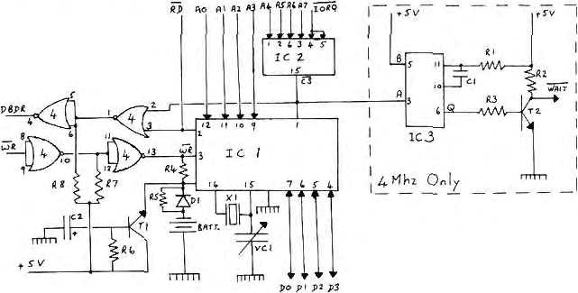

Micropower |
Volume 2 · Number 3 · July 1982 |
| Page 4 of 37 |
|---|
If the unit has been built according to the circuit diagram you will find that it is addressable at ports 64 to 79 (don’t forget to switch to external port addressing). I enclose 2 demonstration programs written in Microsoft 80. The first is called to initialise the clock. Lines 100-190 input the date and time, and control the validity. Line 230 sets all bits of register 14 to 0 thus stopping the clock. Lines 220-380 set up the date and time in registers R4-R13. Note, I don’t use register 10, day of the week. Lines 330-370 set up the correct value for the Leap year. Note, the astuce for detecting the year on a 0 to 3 basis in line 330.
| 0 = | Leap | year | therefore | set | register | 13 to 8 | |
| 1 = | " | " | +1 | " | " | " | 13 to 4 |
| 2 = | " | " | +2 | " | " | " | 13 to 2 |
| 3 = | " | " | +3 | " | " | " | 13 to 1 |
Finally, when all registers have been initialised, it remains to start the clock by sending a 1 to register 14.
The second program is a demonstration of how the clock can be read, once set up. Lines 520, 530 and 560 read data from the 11 registers, starting at register 2 (seconds (units)). Line 540 checks if data read is valid ie. that a value was present at the Data Bus during the address period. Line 550 leaves the BCD value. Lines 580-440 are just one example of displaying the date and time.
As you will no doubt appreciate, there are many possible uses for this clock, from simple time telling, although it does make rather an expensive clock, to sophisticated timing requirements in the case of automatic control functions. What ever your choice, you will always have the time!
| Page 4 of 37 |
|---|